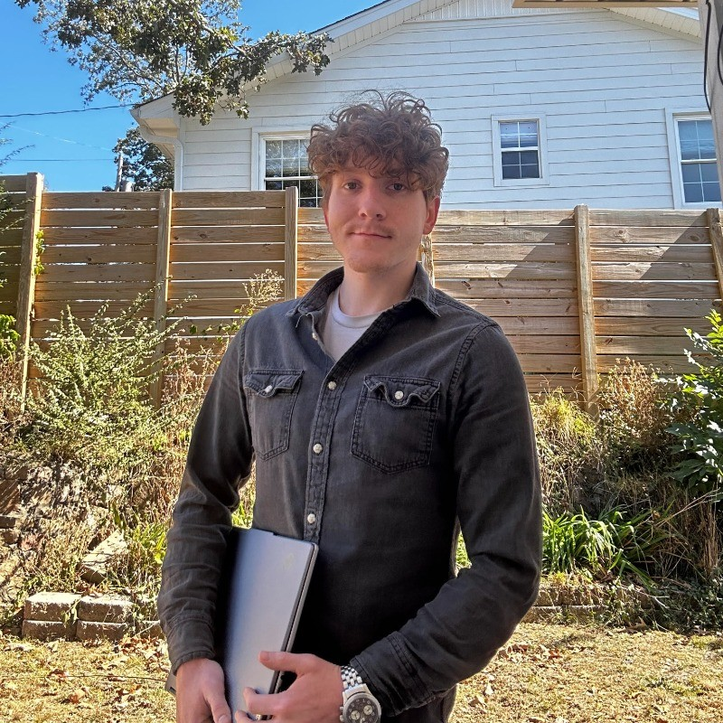

Aspiring Cybersecurity Specialist intended to graduate with a bachelor's in Cybersecurity in May of 2026. Has extensive experience in the service industry, leading to great management and teamwork skills. Great with computers and has coding experience with C++, JavaScript, and Python, as well as experience with digital forensics and security control management. I have had an internship at Southwest Power Pool as a software developer, where I gained valuable experience in the industry, focusing mostly on reworking and updating internal tools used by the IT Markets team. In my time at UALR, I have gained valuable experience in cybersecurity through projects and labs focused on threat modeling, network security, and digital forensics. My work with tools such as FTK Imager and Autopsy, along with in-depth studies of NIST CSRC standards, has solidified my knowledge of key security controls and system vulnerabilities.